Un petit garçon à queue de singe. Des amis improbables. Des adversaires beaucoup trop puissants. Promis : tu n'as pas besoin de rattraper 291 épisodes.
~6 min ensemble4 chapitres0 connaissance requise
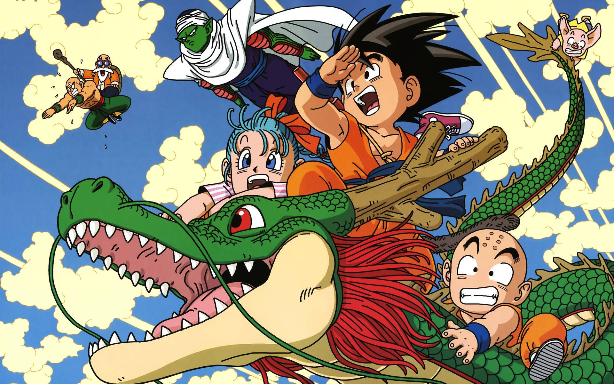
De la Terre jusqu'aux étoiles.Édition découverte · 01
01
Les origines · Dragon Ball
~1 minute
Un garçon avec beaucoup d'appétit.
Au départ, ce n'est pas une guerre dans l'espace. C'est une aventure un peu folle sur Terre.
Son Goku est un petit garçon à queue de singe, très fort et très naïf. Il vit dans les montagnes avec une étrange boule orange héritée de son grand-père.
Bulma, une jeune inventrice, l'entraîne à la recherche des sept Dragon Balls. Réunies, elles invoquent Shenron, un dragon qui exauce un vœu. L'aventure commence !
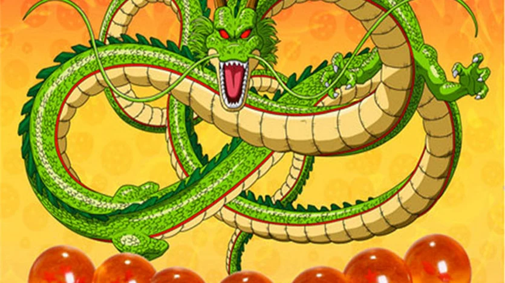
La quête originelle. Réunir les sept boules permet d'appeler Shenron et de faire un vœu.
Goku apprend les arts martiaux avec Krilin, son meilleur ami, auprès de Tortue Géniale. En grandissant, il affronte notamment Piccolo, un rival à la peau verte. Il épouse Chichi et devient le père de Gohan.
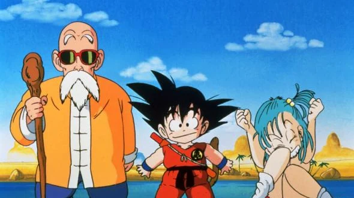
Les premières rencontres. Bulma lance l'aventure ; Tortue Géniale apprend à Goku les arts martiaux.Deux mots utiles : « ki » et « Kamé Hamé Ha »
Le ki, c'est l'énergie intérieure des combattants. Le Kamé Hamé Ha est la célèbre vague d'énergie que lance Goku.
02
Les Saiyans · Dragon Ball Z
~1 minute
Surprise : Goku ne vient pas de la Terre.
Quelques années plus tard, un visiteur venu de l'espace fait exploser toutes les certitudes.
Un frère et une très mauvaise nouvelle
Raditz, un guerrier venu de l'espace, révèle qu'il est le frère de Goku. Tous deux sont des Saiyans : Goku est né sur une autre planète, mais a grandi sur Terre et choisi de la protéger.
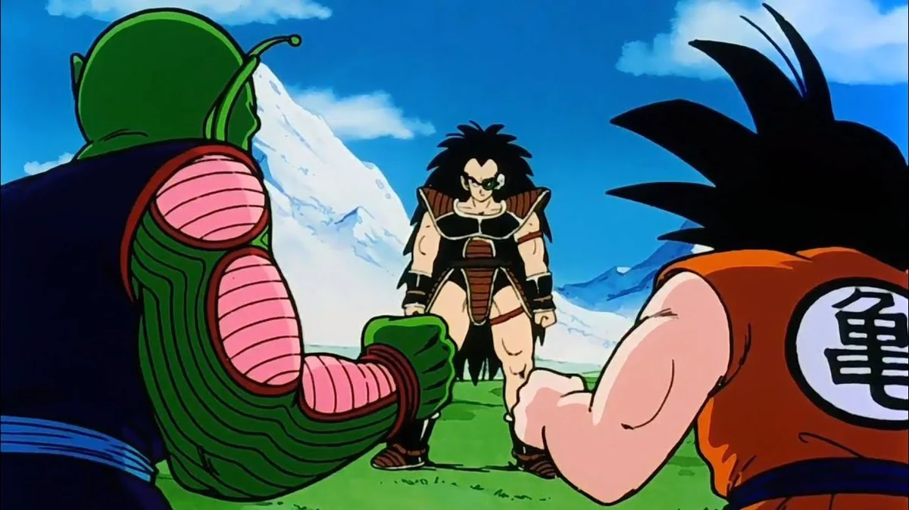
Un frère venu de l'espace. Raditz révèle les origines saiyans de Goku.
Raditz enlève Gohan. Pour le sauver, Goku s'allie à Piccolo, son ancien ennemi. Le combat révèle la force étonnante de Gohan, mais leur victoire a un prix : Goku meurt en sauvant son fils.
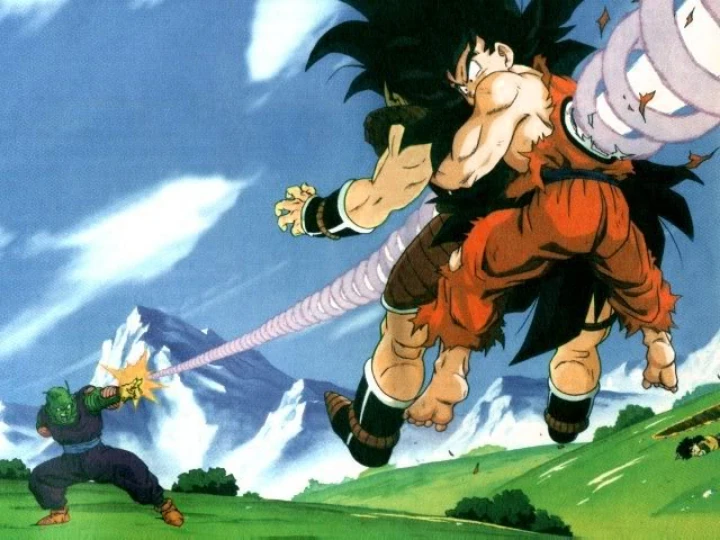
Une alliance inattendue. Les anciens ennemis unissent leurs forces pour sauver Gohan.
Une année pour devenir plus forts
Deux autres Saiyans arrivent dans un an. Goku s'entraîne dans l'au-delà pour les affronter. Pendant ce temps, Piccolo prépare Gohan au combat et s'attache à lui : l'ancien ennemi devient un protecteur.
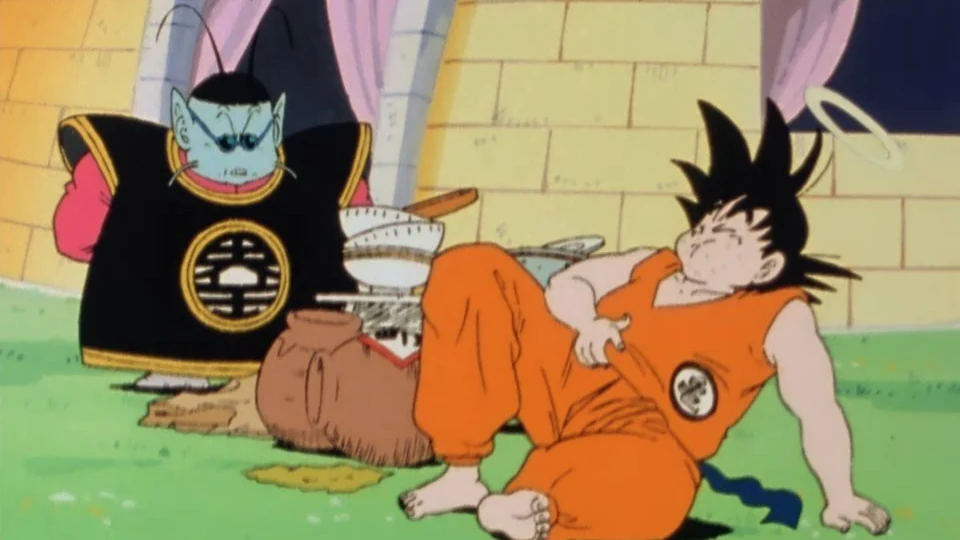
Se préparer à l'impossible. Goku apprend à devenir plus fort.
Le prince entre en scène
Vegeta, le prince des Saiyans, et Nappa attaquent la Terre. Plusieurs amis de Goku meurent, dont Piccolo qui se sacrifie pour Gohan. Sa mort fait aussi disparaître les Dragon Balls : impossible de ressusciter les victimes.
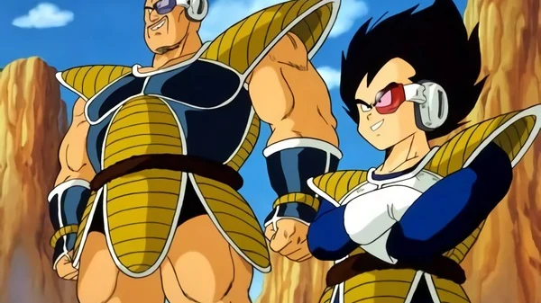
L'échelle change. Vegeta et Nappa viennent de l'espace pour s'emparer des Dragon Balls.
Ramené à la vie avant la disparition des boules, Goku revient et bat Nappa. Vegeta est plus redoutable : il faut l'aide de ses amis pour le repousser. Goku choisit de l'épargner. C'est le début d'une longue rivalité.
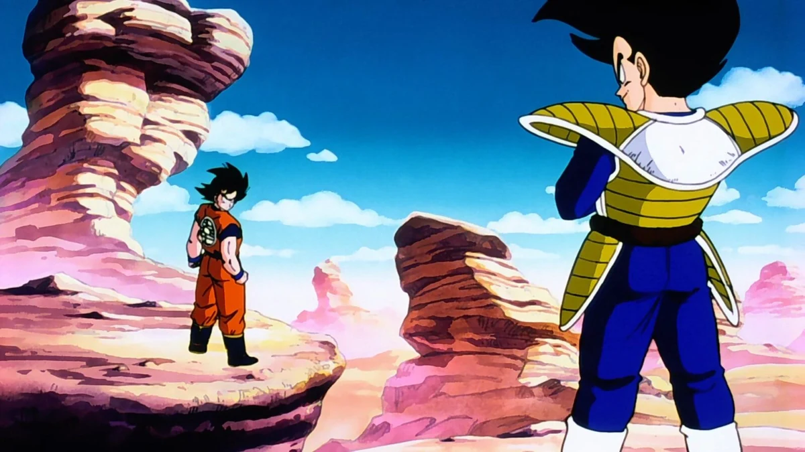
Le début d'une rivalité. Il faut l'aide de ses amis pour que Goku repousse Vegeta.
On peut mourir… et revenir ?
Les Dragon Balls peuvent parfois ressusciter les morts, mais leurs vœux ont des limites. Les héros ne peuvent donc pas simplement compter sur la magie pour tout réparer.
03
Namek & Freezer · Dragon Ball Z
~2 minutes
Une planète verte. Un tyran. Une légende.
Pour sauver leurs amis, nos héros partent chercher d'autres Dragon Balls. Évidemment, ils ne sont pas les seuls.
Pour ressusciter leurs amis, Bulma, Krilin et Gohan partent sur Namek, la planète d'origine de Piccolo. Elle possède aussi des Dragon Balls. Goku, blessé, les rejoindra plus tard.
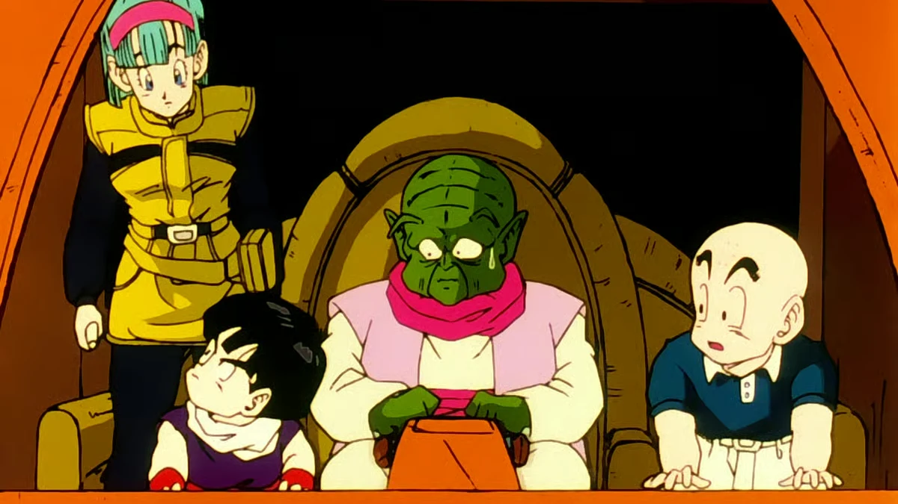
Sur Namek. Gohan et Krilin cherchent de quoi sauver leurs amis.
Ils y trouvent Freezer, un tyran qui fait régner la terreur dans l'espace. Lui aussi veut les boules : son but est de devenir immortel. Pour les obtenir, il massacre les habitants.
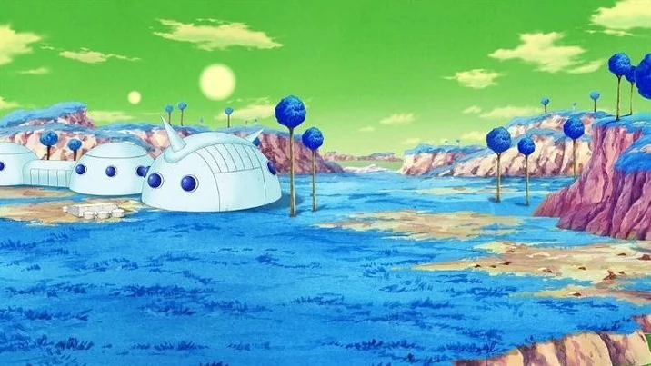
Namek. La planète d'origine de Piccolo, menacée par l'armée de Freezer.
Vegeta veut échapper à Freezer, son ancien maître. Il n'est pas encore l'ami des héros, mais ils vont devoir s'entraider : seuls, ils n'ont aucune chance de lui résister.
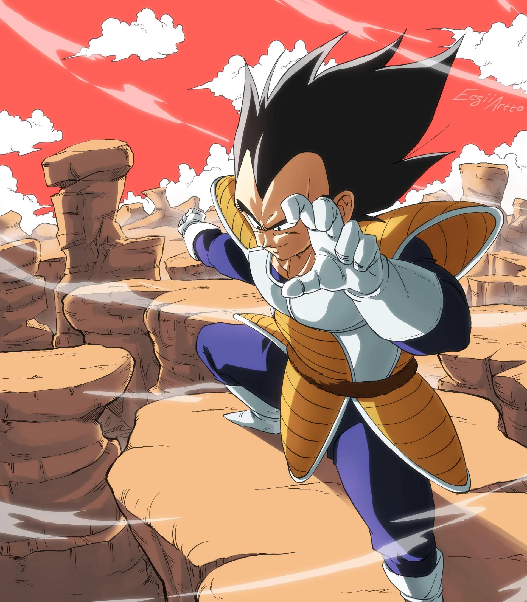
Un allié de circonstance. Vegeta doit coopérer avec les héros face à Freezer.
Les Terriens
Ramener leurs amis
Gohan, Krilin et Bulma veulent réparer les pertes de la bataille sur Terre.
Vegeta
Ne plus subir Freezer
Il poursuit son propre intérêt. Une alliance avec les héros reste possible… par nécessité.
Freezer
Régner pour toujours
L'immortalité rendrait son empire encore plus difficile à arrêter.
Les héros utilisent les Dragon Balls de Namek pour ramener Piccolo à la vie. L'espoir de sauver leurs amis renaît, mais Freezer passe à l'attaque.
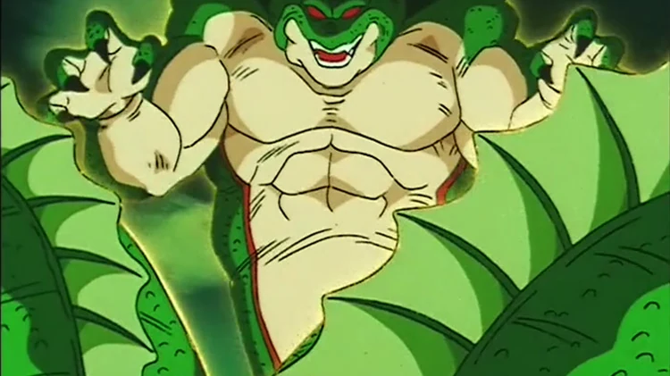
Un espoir de sauvetage. Les boules permettent de ramener leurs amis.
Quand Goku rejoint ses amis, Freezer dévoile sa véritable puissance. Avant de mourir, Vegeta lui révèle que Freezer a détruit leur planète et presque tous les Saiyans. Le combat devient bien plus personnel.
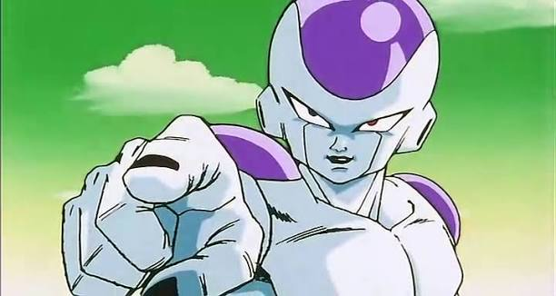
Une même menace. Freezer change de forme et gagne en puissance. L'apparence dorée vient de la suite.
Goku affronte Freezer. Alors qu'il semble proche de la victoire, le tyran tue Krilin sous ses yeux. La mort de son meilleur ami provoque une colère immense.
Goku bat Freezer. Les vœux permettent de sauver les victimes, dont Krilin. Goku s'échappe avant l'explosion de Namek. Ses amis sont sauvés, et l'aventure continue.
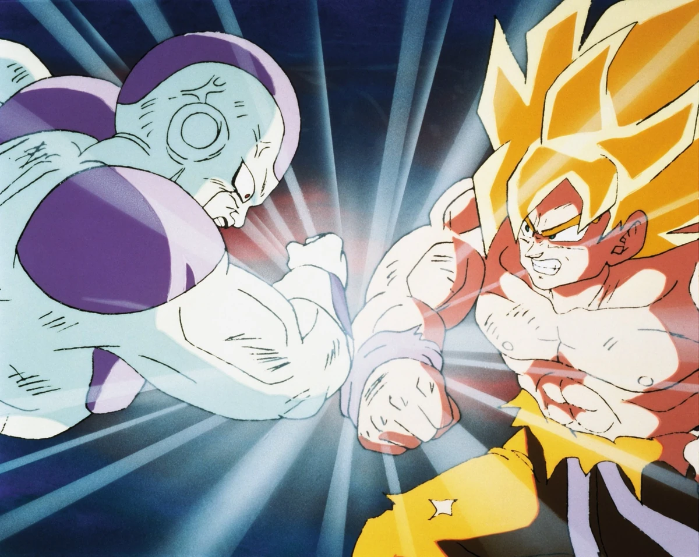
Le duel décisif. Goku prend l'avantage tandis que Namek menace d'exploser.
04
Cell & Boo · La suite en accéléré
~1 minute
Le monde grandit. La famille aussi.
Deux grandes menaces plus tard, nos héros ne sont plus tout à fait les mêmes. Voici l'essentiel, pas chaque combat.
D'abord · Cell
Le fils prend le relais.
Après Freezer, Cell menace la Terre. Ce monstre artificiel absorbe d'autres combattants pour devenir plus fort, puis défie les héros dans un tournoi.
Goku mise sur Gohan, son fils au potentiel immense. Gohan dépasse ses limites et finit par vaincre Cell. Goku s'est sacrifié pendant la bataille et choisit de rester dans l'au-delà.
Le changement important : Gohan peut désormais protéger la Terre. Vegeta, lui, s'attache à la famille qu'il a fondée avec Bulma.
Gohan devient Super Saiyan 2
Vidéo en ligne : une connexion Internet est nécessaire.
Des années plus tard, Majin Boo apparaît : un monstre magique capable de se reformer après chaque attaque.
Goku revient aider ses amis. Vegeta se sacrifie pour protéger sa famille, mais même cela ne suffit pas à arrêter Boo.
Pour vaincre le Boo maléfique, Goku rassemble l'énergie de tous les Terriens. Vegeta l'aide au combat ; Mister Satan convainc les humains de participer. C'est une victoire collective.
Le changement important : Goku revient définitivement à la vie et Vegeta sait coopérer. Une version bienveillante de Boo reste leur amie. La paix revient.
À suivre · Beerus entre en scène
La suite : Dragon Ball Super.
Après Boo, cap sur Dragon Ball Super ! Goku y rencontre Beerus, le dieu de la Destruction. Face à lui, même la puissance d'un Super Saiyan ne suffit plus : une nouvelle aventure commence.
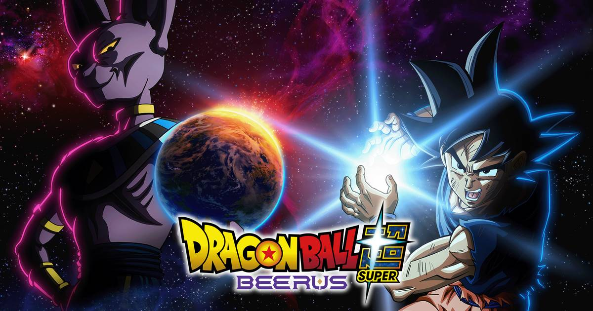
Un nouveau cap. Avec Beerus, Goku découvre la puissance des dieux.
Bonus · Qui est qui ?
La petite bande à garder en tête.
Touche une fiche pour retrouver le rôle de chacun.
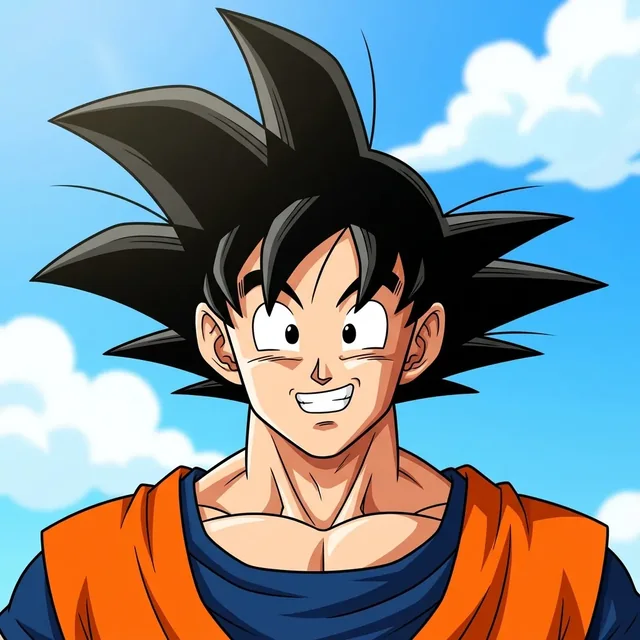
GokuLe héros · le père de Gohan+
Saiyan élevé sur Terre, père de Gohan et Goten. Il aime les défis, ses amis et les bons repas.
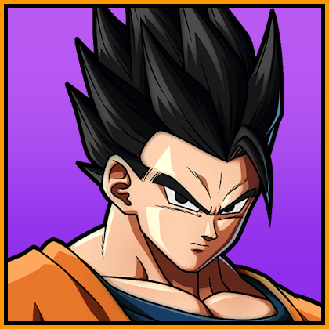
GohanLe fils · le potentiel immense+
Fils de Goku et élève de Piccolo. Gentil et studieux, il cache une puissance immense.
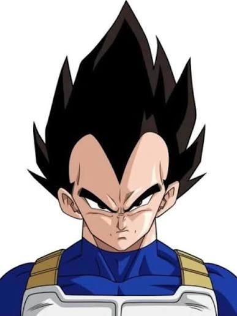
VegetaLe prince · le rival de Goku+
Prince des Saiyans. D'abord ennemi de Goku, puis rival et allié. Compagnon de Bulma et père de Trunks.
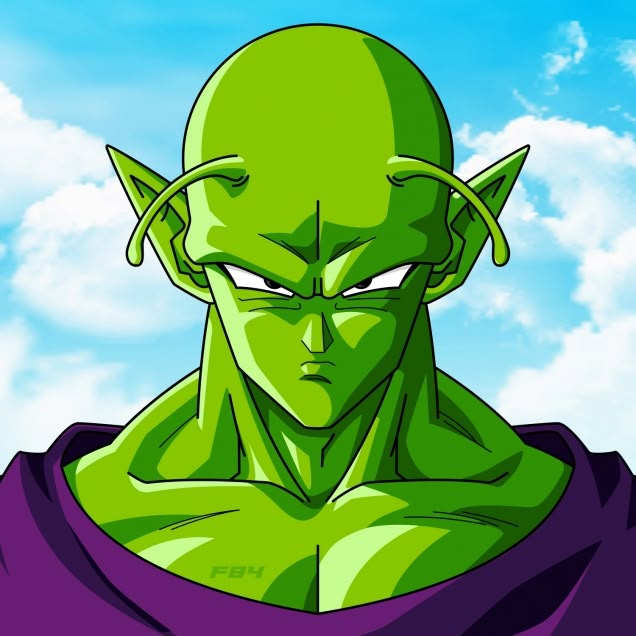
PiccoloLe mentor · le protecteur vert+
Un Namek à la peau verte. Ancien ennemi devenu allié, il est le maître et le protecteur de Gohan.
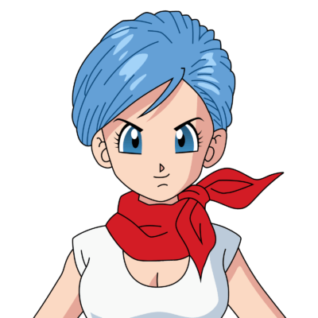
BulmaL'inventrice · le cerveau de l'équipe+
Inventrice du radar des Dragon Balls et amie de Goku. Compagne de Vegeta, elle est la mère de Trunks.
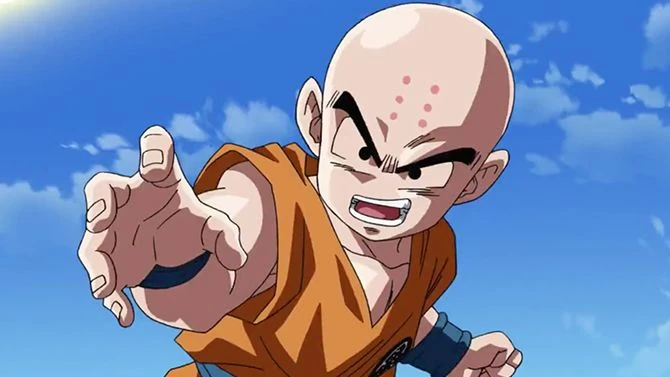
KrilinLe meilleur ami · le courage humain+
Le meilleur ami de Goku. Sa mort sur Namek déclenche la première transformation en Super Saiyan.
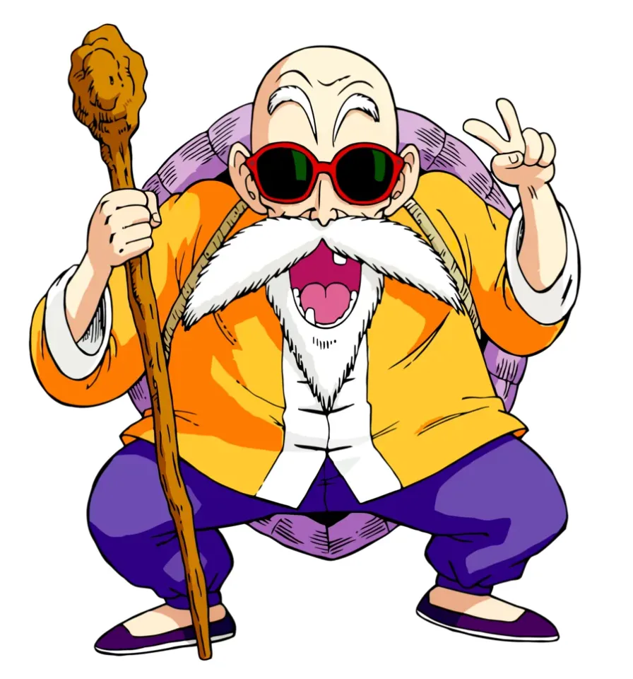
Tortue GénialeLe maître · les premiers entraînements+
Le premier maître de Goku et Krilin. Il leur enseigne les arts martiaux et le Kamé Hamé Ha.
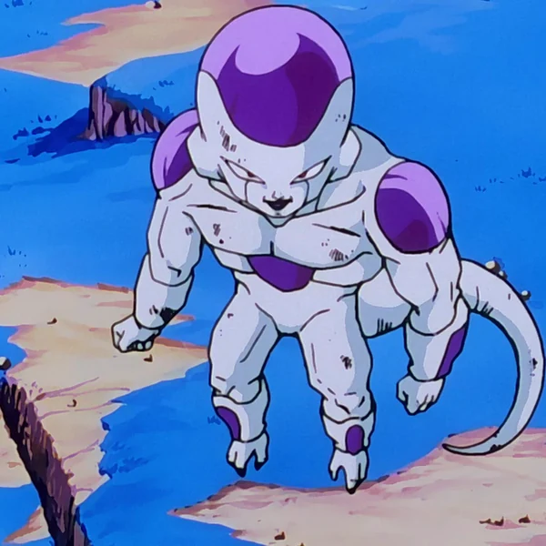
FreezerLe tyran · l'ennemi sur Namek+
Le tyran qui a détruit la planète des Saiyans. Il cherche l'immortalité et affronte Goku sur Namek.
ChichiLa mère · le retour au quotidien+
Femme de Goku, mère de Gohan et Goten. Elle veille à leur sécurité et à leurs études.
TrunksLe fils de Bulma et Vegeta+
Le fils de Bulma et Vegeta. Sa version adulte vient du futur ; enfant, il grandit avec Goten.
Boo & Mister SatanUne amitié très inattendue+
Mister Satan se lie d'amitié avec le Boo bienveillant. Il aide aussi Goku à obtenir l'énergie des Terriens.
Fin du guide · mission accomplie
Tu connais l'essentiel. Bienvenue dans la bande.
Pas besoin de retenir chaque nom. Garde cette idée : derrière les combats immenses, c'est l'histoire d'une famille un peu bizarre qui apprend à protéger son monde.
La version « rappelle-moi tout en 30 secondes »
Goku est un Saiyan élevé sur Terre. Gohan est son fils, Krilin son meilleur ami.
Sept Dragon Balls permettent d'appeler un dragon et de faire des vœux.
Piccolo et Vegeta sont d'anciens ennemis devenus des alliés.
Sur Namek, Goku bat Freezer et devient Super Saiyan.
Gohan bat Cell. Les héros viennent ensuite à bout du Boo maléfique.